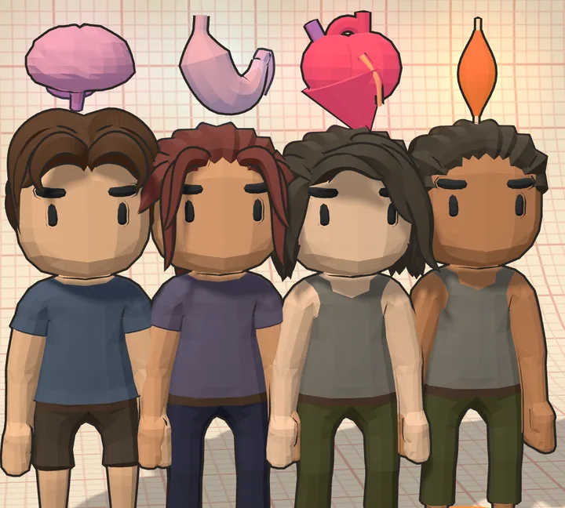

Teste · 12 frases · 2 minutos
Descubra qual dos 4 tipos de ganho de gordura é o seu
Para começar, você é:
Quantos anos você tem?
anos
Como o Dr. Lucca pode te chamar no seu resultado?
qual é o seu peso e a sua altura?
Arraste cada roda até o seu número. Pode ser aproximado.
kg
cm
Nem todo mundo engorda pelo mesmo motivo.
Na Mayo Clinic, os médicos acharam 4 tipos.
Os pacientes tratados pelo tipo perderam quase o dobro de peso em 1 ano: 15,9% contra 9,0% dos tratados do jeito de sempre.
Agora, frases rápidas. Toque no quanto cada uma parece com você.
Fonte: Acosta et al., Obesity 2021 · 312 pacientes da Mayo Clinic, em 2 grupos
metade feita.
Quase 3 em cada 10 têm mais de um tipo.
Na Mayo Clinic, 27% dos pacientes tinham 2 tipos ou mais. Por isso o teste olha os 4 até o fim.
Fonte: Acosta et al., Obesity 2021 · 450 pacientes classificados
O que você já tentou para emagrecer?
Marque tudo o que já tentou.
Qual é o seu verdadeiro objetivo?
0%
Lendo as suas respostas…
Quer uma estratégia para o seu tipo?
Receba um plano para o seu tipo, sem custo.
Análise sem custo se enviar nos próximos 05:00
Quero a minha estratégia ou pelo Direct do InstagramMensagem copiadaÉ só colar no Direct: toque e segure na caixa de mensagem e escolha Colar.
Mande esta mensagem no Direct
Oi, Dr. Lucca! Meu código é LV-0000Toque e segure na mensagem, escolha Copiar e cole no Direct. Abrir o Direct